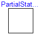
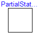
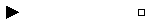
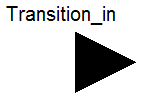
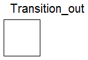
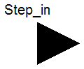
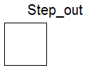

| Name | Description |
|---|---|
| Step_in | Input port of a step |
| Step_out | Output port of a step |
| Transition_in | Input port of a transition |
| Transition_out | Output port of a transition |
| CompositeStep_resume | Input port of a step (used for resume connector of a CompositeStep) |
| CompositeStep_suspend | Output port of a step (used for suspend connector of a CompositeStep) |
| CompositeStepStatePort_in | Communication port between a CompositeStep and the ordinary steps within the CompositeStep (suspend/resume are inputs) |
| CompositeStepStatePort_out | Communication port between a CompositeStep and the ordinary steps within the CompositeStep (suspend/resume are outputs) |
| PartialStep | Partial step with one input and one output transition port |
| PartialTransition | Partial transition with input and output connections |
| PartialStateGraphIcon | Icon for a StateGraph object |
| CompositeStepState | Communication channel between CompositeSteps and steps in the CompositeStep |
Modelica.StateGraph.Interfaces.PartialStep
| Name | Default | Description |
|---|---|---|
| nIn | 1 | Number of input connections |
| nOut | 1 | Number of output connections |
partial block PartialStep
"Partial step with one input and one output transition port"
parameter Integer nIn(min=0) = 1 "Number of input connections";
parameter Integer nOut(min=0) = 1 "Number of output connections";
/* localActive is introduced since component 'Step' has Boolean variable 'active'
and component 'StepWithSignal' has connector instance 'active' defined
and both components inherit from PartialStep
*/
output Boolean localActive
"= true if step is active, otherwise the step is not active";
Interfaces.Step_in inPort[
nIn];
Interfaces.Step_out outPort[
nOut];
protected
outer Interfaces.CompositeStepState stateGraphRoot;
CompositeStepStatePort_in subgraphStatePort;
Boolean newActive "Value of active in the next iteration";
Boolean oldActive "Value of active when CompositeStep was aborted";
initial equation
pre(newActive) = pre(localActive);
pre(oldActive) = pre(localActive);
equation
connect(subgraphStatePort, stateGraphRoot.subgraphStatePort);
// Check that connections to the connector are correct
for i in 1:nIn loop
assert(cardinality(inPort[i]) <= 1,
"Connector inPort[" + String(i) + "] of the step is connected
to more than one transition");
end for;
for i in 1:nOut loop
assert(cardinality(outPort[i]) <= 1,
"Connector outPort[" + String(i) + "] of the step is connected
to more than one transition");
end for;
// set active state
localActive = pre(newActive);
newActive = if subgraphStatePort.resume then
oldActive else
( StateGraph.Temporary.anyTrue(inPort.set) or
localActive
and not StateGraph.Temporary.anyTrue(outPort.reset))
and not subgraphStatePort.suspend;
// Remember state for suspend action
when subgraphStatePort.suspend then
oldActive = localActive;
end when;
// Report state to CompositeStep
subgraphStatePort.activeSteps = if localActive then 1.0 else 0.0;
// Report state to input and output transitions
for i in 1:nIn loop
inPort[i].occupied = if i == 1 then localActive else
inPort[i-1].occupied or
inPort[i-1].set;
end for;
for i in 1:nOut loop
outPort[i].available = if i == 1 then localActive else
outPort[i-1].available and not
outPort[i-1].reset;
end for;
// Default setting, if an inPort or an outPort is not connected
for i in 1:nIn loop
if cardinality(inPort[i]) == 0 then
inPort[i].set = false;
end if;
end for;
for i in 1:nOut loop
if cardinality(outPort[i]) == 0 then
outPort[i].reset = false;
end if;
end for;
end PartialStep;
Modelica.StateGraph.Interfaces.PartialTransition

| Name | Default | Description |
|---|---|---|
| Timer | ||
| enableTimer | false | = true, if timer is enabled |
| waitTime | 0 | Wait time before transition fires [s] |
partial block PartialTransition
"Partial transition with input and output connections"
input Boolean localCondition "= true, if transition may fire";
parameter Boolean enableTimer=false "= true, if timer is enabled";
parameter Modelica.SIunits.Time waitTime( min=0) = 0
"Wait time before transition fires";
output Modelica.SIunits.Time t
"= actual waiting time (transition will fire when t > waitTime)";
output Boolean enableFire "= true, if all firing conditions are true";
output Boolean fire "= true, if transition fires";
StateGraph.Interfaces.Transition_in inPort;
StateGraph.Interfaces.Transition_out outPort;
protected
Modelica.SIunits.Time t_start
"Time instant at which the transition would fire, if waitTime would be zero";
Real t_dummy;
initial equation
pre(enableFire) = false;
equation
assert(cardinality(inPort) == 1,
"Connector inPort is not connected to exactly one other connector");
assert(cardinality(outPort) == 1,
"Connector outPort is not connected to exactly one other connector");
// Handling of Timer
if enableTimer then
when enableFire then
t_start = time;
end when;
t_dummy = time - t_start;
t = if enableFire then t_dummy else 0;
fire = enableFire and time >= t_start + waitTime;
else
t_start = 0;
t_dummy = 0;
t = 0;
fire = enableFire;
end if;
// Determine fire setting and report it to the connected step
enableFire = localCondition and inPort.available and not outPort.occupied;
inPort.reset = fire;
outPort.set = fire;
end PartialTransition;
Modelica.StateGraph.Interfaces.Transition_in
connector Transition_in "Input port of a transition"
input Boolean available
"true, if step connected to the transition input is active";
output Boolean reset
"true, if transition fires and the step connected to the transition input is deactivated";
end Transition_in;
Modelica.StateGraph.Interfaces.Transition_out
connector Transition_out "Output port of a transition"
input Boolean occupied
"true, if step connected to the transition output is active";
output Boolean set
"true, if transition fires and step connected to the transition output becomes active";
end Transition_out;

connector Step_in "Input port of a step" output Boolean occupied "true, if step is active"; input Boolean set "true, if transition fires and step is activated"; end Step_in;

connector Step_out "Output port of a step" output Boolean available "true, if step is active"; input Boolean reset "true, if transition fires and step is deactivated"; end Step_out;
block CompositeStepState
"Communication channel between CompositeSteps and steps in the CompositeStep"
output Boolean suspend = false;
output Boolean resume = false;
StateGraph.Interfaces.CompositeStepStatePort_out subgraphStatePort;
/*
missingInnerMessage="No \"stateGraphRoot\" component is defined on highest level
of the StateGraph. A stateGraphRoot component is automatically introduced.
In order to get rid of this message, drag StateGraph.StateGraphRoot into the
top level your model.");
*/
equation
suspend = subgraphStatePort.suspend;
resume = subgraphStatePort.resume;
end CompositeStepState;
Modelica.StateGraph.Interfaces.CompositeStep_suspend
connector CompositeStep_suspend "Output port of a step (used for suspend connector of a CompositeStep)" output Boolean available "true, if step is active"; input Boolean reset "true, if transition fires and step is deactived"; end CompositeStep_suspend;
Modelica.StateGraph.Interfaces.CompositeStep_resume
connector CompositeStep_resume "Input port of a step (used for resume connector of a CompositeStep)" output Boolean occupied "true, if step is active"; input Boolean set "true, if transition fires and step is activated"; end CompositeStep_resume;
connector CompositeStepStatePort_in "Communication port between a CompositeStep and the ordinary steps within the CompositeStep (suspend/resume are inputs)" input Boolean suspend "= true, if suspend transition of CompositeStep fires"; input Boolean resume "= true, if resume transition of CompositeStep fires"; flow output Real activeSteps "Number of active steps in the CompositeStep"; end CompositeStepStatePort_in;
connector CompositeStepStatePort_out "Communication port between a CompositeStep and the ordinary steps within the CompositeStep (suspend/resume are outputs)" output Boolean suspend "= true, if suspend transition of CompositeStep fires"; output Boolean resume "= true, if resume transition of CompositeStep fires"; flow input Real activeSteps "Number of active steps in the CompositeStep"; end CompositeStepStatePort_out;
partial block PartialStateGraphIcon "Icon for a StateGraph object" equation end PartialStateGraphIcon;